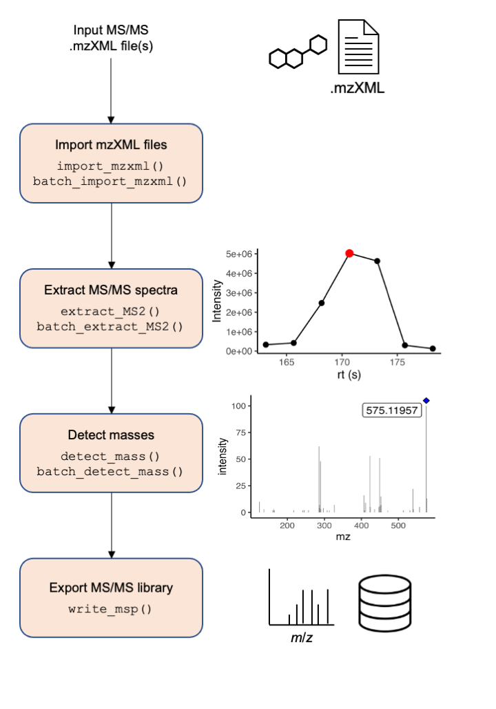
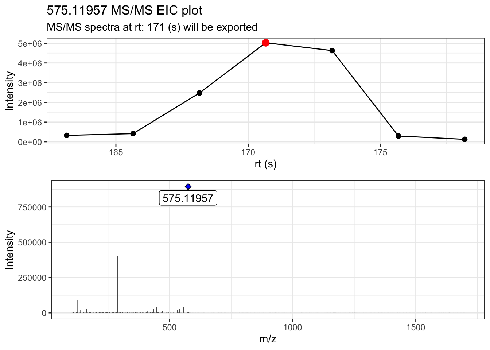
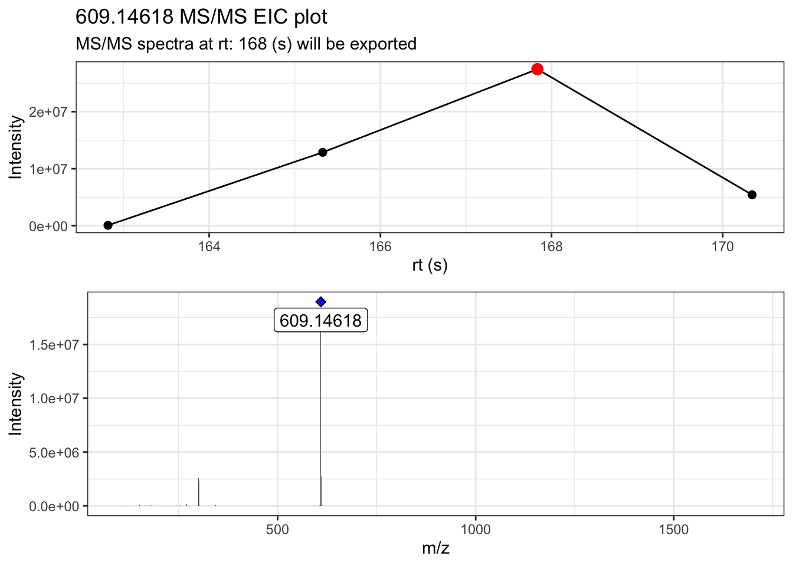
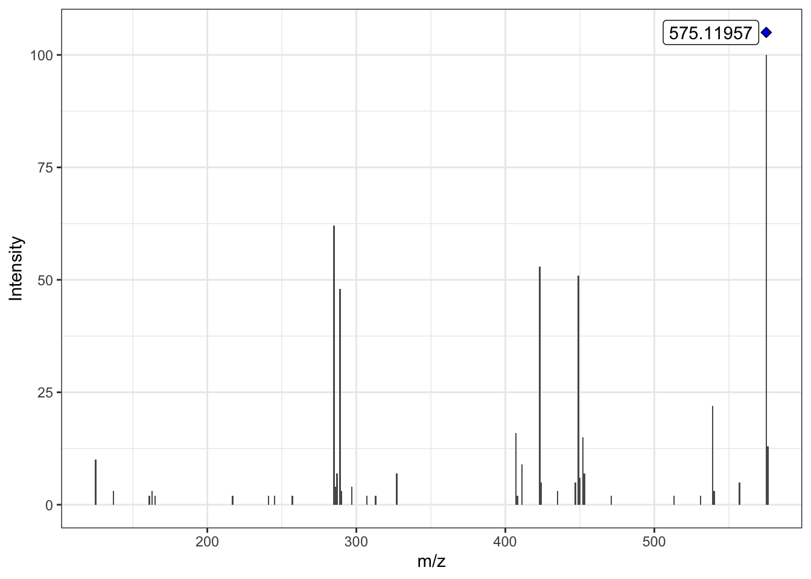
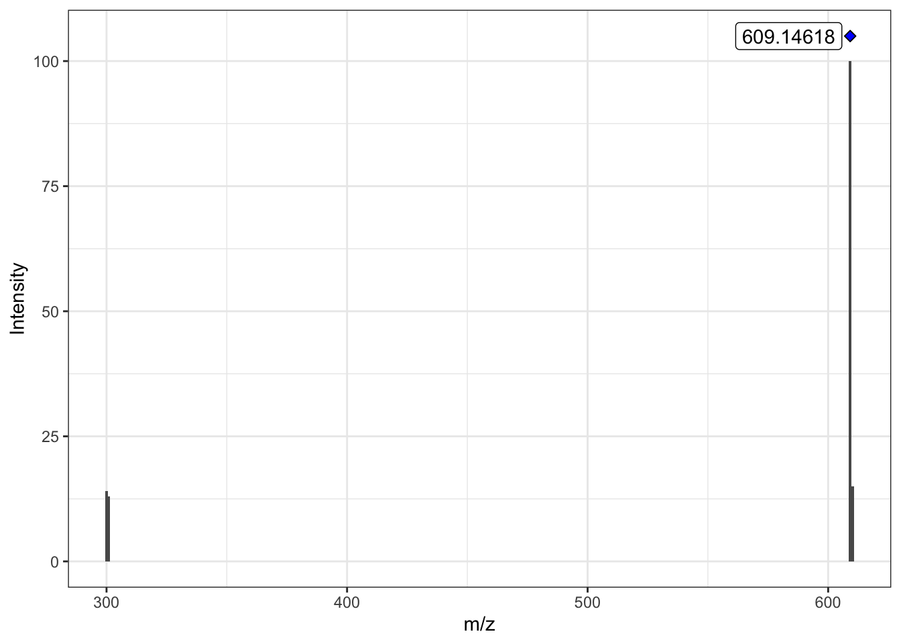

MS2extract Part 2 - Using the MS2extract batch pipeline
Introduction
In the previous tutorial Introduction to MS2extract package, we described in a detailed manner the core functions of the package. If you are starting to use the MS2extract package with this tutorial, we encourage you to take a look at this tutorial first.
Once you are familiar with the core workflow and functions of this package, we can dive into an automated pipeline with the proposed batch_*() functions. If you find that you want to extract many MS/MS spectra at once, you will want to use thesebatch_*() functions
The first three main steps have a separate batch_*() alternative functions; importing mzXML files, extracting MS/MS spectra, and detecting masses. However, exporting your library to a .msp file is able to detect if the provided spectra comes from a single or multiple .mzXML file, so the same function works in both cases.
Batch functions
We are familiar with the arguments that the core functions accept, here in this section we describe extra arguments that specific batch_*() functions require.
batch_import_mzxml
knitr::opts_chunk$set(warning = FALSE)
library(MS2extract)
#> Warning in fun(libname, pkgname): mzR has been built against a different Rcpp version (1.0.10)
#> than is installed on your system (1.0.12). This might lead to errors
#> when loading mzR. If you encounter such issues, please send a report,
#> including the output of sessionInfo() to the Bioc support forum at
#> https://support.bioconductor.org/. For details see also
#> https://github.com/sneumann/mzR/wiki/mzR-Rcpp-compiler-linker-issue.Similarly to import_mzxml(), we need to provide compound metadata, with at minimum the compound name, formula, ionization mode, and optionally (but recommended) the region of interest (min_rt and max_rt).
# Select the csv file name and path
batch_file <- system.file("extdata", "batch_read.csv",
package = "MS2extract"
)
# Read the data frame
batch_data <- read.csv(batch_file)
# File paths for Procyanidin A2 and Rutin
ProcA2_file <- system.file("extdata",
"ProcyanidinA2_neg_20eV.mzXML",
package = "MS2extract"
)
Rutin_file <- system.file("extdata",
"Rutin_neg_20eV.mzXML",
package = "MS2extract"
)
# Add file path - User should specified the file path -
batch_data$File <- c(ProcA2_file, Rutin_file)
# Checking batch_data data frame
dplyr::glimpse(batch_data)
#> Rows: 2
#> Columns: 7
#> $ Name <chr> "Procyanidin A2", "Rutin"
#> $ Formula <chr> "C30H24O12", "C27H30O16"
#> $ Ionization_mode <chr> "Negative", "Negative"
#> $ min_rt <int> 163, 162
#> $ max_rt <int> 180, 171
#> $ COLLISIONENERGY <chr> " 20 eV", " 20 eV"
#> $ File <chr> "/Users/quirozmoreno.1/Library/R/arm64/4.3/library/MS2…The only difference between batch_import_mzxml() and import_mzxml() is that met_metadata can be more than one row. Here we are working with two compounds, procyanidin A2 and rutin.
Tip: you can extract multiple compounds from the same .mzXML if they have different precursor ion m/z.
Tip: you can also specify multiple compounds that have the same m/z as long as they have different retention time.
batch_compounds <- batch_import_mzxml(batch_data)
#>
#> ── Begining batch import ───────────────────────────────────────────────────────
#>
#> ── -- ──
#>
#> • Processing: ProcyanidinA2_neg_20eV.mzXML
#> • Found 1 CE value: 20
#> • Remember to match CE velues in spec_metadata when exporting your library
#> • m/z range given 10 ppm: 575.11376 and 575.12526
#> • Compound name: Procyanidin A2. 20 eV
#>
#> ── -- ──
#>
#> • Processing: Rutin_neg_20eV.mzXML
#> • Found 1 CE value: 20
#> • Remember to match CE velues in spec_metadata when exporting your library
#> • m/z range given 10 ppm: 609.14002 and 609.15221
#> • Compound name: Rutin. 20 eV
#>
#> ── End batch import ────────────────────────────────────────────────────────────The raw mzXML data contains:
- Procyanidin A2: 24249 ions
- Rutin: 22096 ions
# Checking dimension by compound
purrr::map(batch_compounds, dim)
#> $`Procyanidin A2. 20 eV`
#> [1] 24249 6
#>
#> $`Rutin. 20 eV`
#> [1] 22096 6batch_extract_MS2
Now that we have our data in imported, we can proceed to extract the most intense MS/MS scan for each compound. In this case, the batch_extract_MS2() functions do not have extra arguments, although most of the arguments remains fairly similar.
# Use extract batch extract_MS2
batch_extracted <- batch_extract_MS2(batch_compounds,
verbose = TRUE,
out_list = FALSE
)

By using verbose = TRUE, we can display the MS/MS TIC plot as well the raw MS/MS spectra.
batch_detect_mass
Now that we have the raw MS/MS spectra, we are going to remove background noise/non-informative product ions based on intensity. batch_detect_mass() has the same arguments than its core analogue.
batch_mass_detected <- batch_detect_mass(batch_extracted, # Compound list
normalize = TRUE, # Normalize
min_int = 1
) # Minimum intensity
purrr::map(batch_mass_detected, dim)
#> $`Procyanidin A2. 20 eV`
#> [1] 38 6
#>
#> $`Rutin. 20 eV`
#> [1] 4 6We see a decrease of number of ions, 38 and 4 ions for procyanidin A2 and rutin, respectively.
Detected MS2 Procyanidin A2
plot_MS2spectra(batch_mass_detected, "Procyanidin A2. 20 eV")
Detected MS2 Rutin
plot_MS2spectra(batch_mass_detected, "Rutin. 20 eV")
write_msp
In contrast with the previous batch functions, write_msp() is able to detect if the user is providing a single spectra or multiple spectra. However, the user needs to provide metadata about each compound to be included in the resulting .msp database.
# Reading batch metadata
metadata_msp_file <- system.file("extdata",
"batch_msp_metadata.csv",
package = "MS2extract"
)
metadata_msp <- read.csv(metadata_msp_file)
dplyr::glimpse(metadata_msp)
#> Rows: 2
#> Columns: 8
#> $ NAME <chr> "Procyanidin A2", "Rutin"
#> $ PRECURSORTYPE <chr> "[M-H]-", "[M-H]-"
#> $ FORMULA <chr> "C30H24O12", "C27H30O16"
#> $ INCHIKEY <chr> "NSEWTSAADLNHNH-LSBOWGMISA-N", "IKGXIBQEEMLURG-NVPNHPE…
#> $ SMILES <chr> "C1C(C(OC2=C1C(=CC3=C2C4C(C(O3)(OC5=CC(=CC(=C45)O)O)C6…
#> $ IONMODE <chr> "Negative", "Negative"
#> $ INSTRUMENTTYPE <chr> "LC-ESI-QTOF", "LC-ESI-QTOF"
#> $ COLLISIONENERGY <chr> "20 eV", "20 eV"After having the cleaned MS/MS spectra and the compound metadata, we can proceed to export them into a .msp file.
write_msp(
spec = batch_mass_detected,
spec_metadata = metadata_msp,
msp_name = "ProcA2_Rutin_batch.msp"
)Session info
sessionInfo()
#> R version 4.3.1 (2023-06-16)
#> Platform: aarch64-apple-darwin20 (64-bit)
#> Running under: macOS Sonoma 14.3
#>
#> Matrix products: default
#> BLAS: /Library/Frameworks/R.framework/Versions/4.3-arm64/Resources/lib/libRblas.0.dylib
#> LAPACK: /Library/Frameworks/R.framework/Versions/4.3-arm64/Resources/lib/libRlapack.dylib; LAPACK version 3.11.0
#>
#> locale:
#> [1] en_US.UTF-8/en_US.UTF-8/en_US.UTF-8/C/en_US.UTF-8/en_US.UTF-8
#>
#> time zone: America/New_York
#> tzcode source: internal
#>
#> attached base packages:
#> [1] stats graphics grDevices utils datasets methods base
#>
#> other attached packages:
#> [1] MS2extract_0.01.0
#>
#> loaded via a namespace (and not attached):
#> [1] tidyselect_1.2.0 farver_2.1.1 dplyr_1.1.4
#> [4] fastmap_1.1.1 XML_3.99-0.14 digest_0.6.33
#> [7] lifecycle_1.0.4 cluster_2.1.4 ProtGenerics_1.32.0
#> [10] magrittr_2.0.3 compiler_4.3.1 rlang_1.1.3
#> [13] tools_4.3.1 utf8_1.2.4 yaml_2.3.8
#> [16] knitr_1.45 ggsignif_0.6.4 labeling_0.4.3
#> [19] htmlwidgets_1.6.4 plyr_1.8.9 abind_1.4-5
#> [22] BiocParallel_1.34.2 withr_2.5.2 purrr_1.0.2
#> [25] BiocGenerics_0.48.1 grid_4.3.1 stats4_4.3.1
#> [28] preprocessCore_1.62.1 fansi_1.0.6 ggpubr_0.6.0
#> [31] colorspace_2.1-0 ggplot2_3.4.4 scales_1.3.0
#> [34] iterators_1.0.14 MASS_7.3-60 cli_3.6.2
#> [37] mzR_2.34.1 rmarkdown_2.25 generics_0.1.3
#> [40] Rdisop_1.60.0 tzdb_0.4.0 readxl_1.4.3
#> [43] ncdf4_1.21 affy_1.78.2 zlibbioc_1.46.0
#> [46] parallel_4.3.1 impute_1.74.1 cellranger_1.1.0
#> [49] BiocManager_1.30.22 vsn_3.68.0 vctrs_0.6.5
#> [52] jsonlite_1.8.8 carData_3.0-5 car_3.1-2
#> [55] hms_1.1.3 IRanges_2.34.1 S4Vectors_0.38.2
#> [58] MALDIquant_1.22.1 rstatix_0.7.2 ggrepel_0.9.4
#> [61] clue_0.3-65 foreach_1.5.2 limma_3.56.2
#> [64] tidyr_1.3.0 affyio_1.70.0 glue_1.7.0
#> [67] MSnbase_2.26.0 codetools_0.2-19 cowplot_1.1.1
#> [70] gtable_0.3.4 OrgMassSpecR_0.5-3 mzID_1.38.0
#> [73] munsell_0.5.0 tibble_3.2.1 pillar_1.9.0
#> [76] pcaMethods_1.92.0 htmltools_0.5.7 R6_2.5.1
#> [79] Rdpack_2.6 doParallel_1.0.17 evaluate_0.23
#> [82] lattice_0.21-8 Biobase_2.62.0 readr_2.1.4
#> [85] rbibutils_2.2.16 backports_1.4.1 broom_1.0.5
#> [88] Rcpp_1.0.12 xfun_0.41 MsCoreUtils_1.12.0
#> [91] pkgconfig_2.0.3